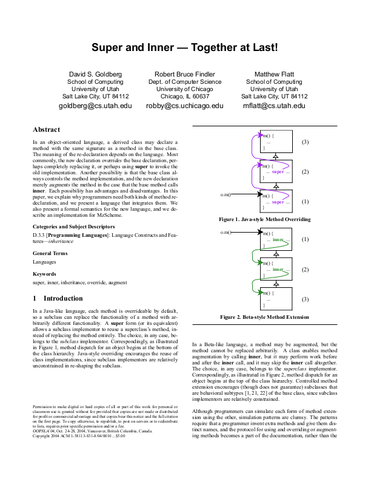
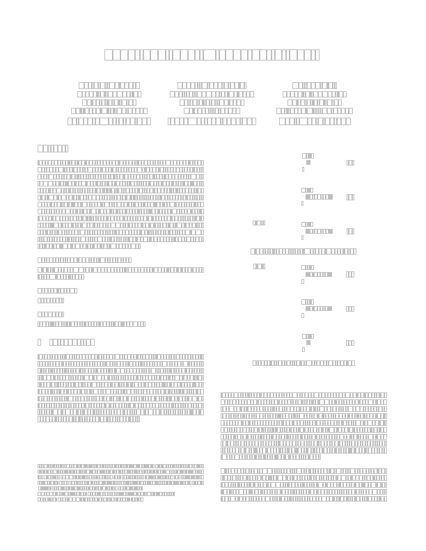
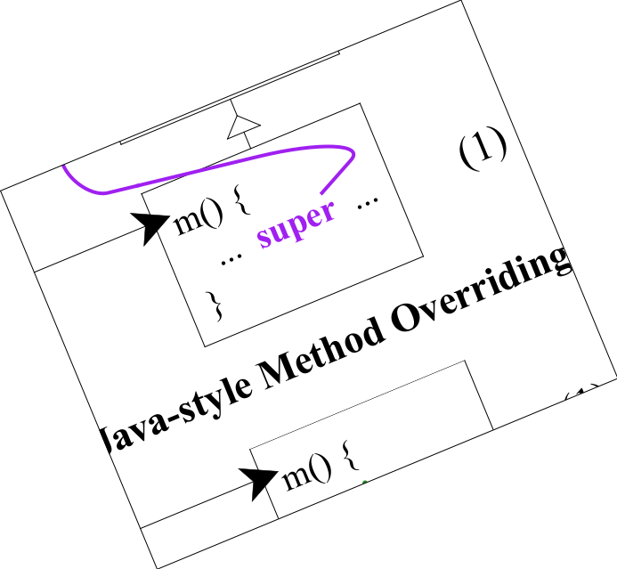
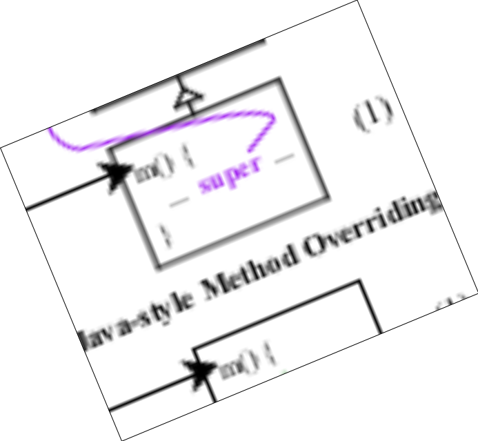

pdf-render: Render and parse PDF files
gcr, based on code by Jens Axel Søgaard
This library lets Racket render PDF files. You can also gather information
about the text or layout.
This requires libpoppler, and thus likely only works on Linux or Mac OSX.
Windows might work if you insctall Poppler, but I can’t make promises.
1 Examples
Showing a PDF as a pict is as easy as you’d expect:

By default, page->pict shows the first page of the given PDF filename.
You can also say something like (show-pict (page->pict (pdf-page "oopsla04-gff.pdf" 5))) to show the 6th page (pages are zero-indexed).
You can also search for text. This snippet searches for every occurance of the
word "the" and overlays a yellow rectangle on each:
Finally, for low-level layout control, you can gather the bounding box geometry
for each letter on the page. This snippet outlines each letter’s bounding box.

Note that
page->pict does not convert the file to a bitmap. You can
rotate, scale, or transform the resulting pict however you like without losing
quality.

If you want to coerce the result to a bitmap for speed, you can do that as
well:

2 PDF files
All functions that accept pages or documents also accept filenames. This is
more convenient for you, but it is also less efficient because the document
must be re-opened every time. You can make this faster by keeping the result of
pdf-page or open-pdf-uri to ensure that this library only
opens the document once.
Returns
#t if
maybe-doc is a PDF document. This can be a
string (filename) or the result of
open-pdf-uri.
Opens the given PDF file with the given uri and the given password. The
password may be #f if the document does not have a password.
The uri is usually something like "file:/tmp/test.pdf";
anything libpoppler accepts. Don’t forget the file: at the beginning for
local documents!
This function will throw an error if the PDF file does not exist.
For example, if you wish to show the tenth page from an encrypted document,
use:
As a shortcut,
(page->pict "/tmp/filename.pdf") is a shortcut for
Most of these functinos honor shortcuts like this.
Returns true if
maybe-page is a page. Pages can be filenames (in which
case the first page of the document will be used),
pdf-document?s, or
the result of
pdf-page.
Opens the page-indexth page in maybe-doc. Pages are
zero-indexed, so if you want the
third page of "/tmp/oopsla04-gff.pdf", for example, use:
3 Rendering
Renders the given
page to a
pict from Racket’s
slideshow/pict library. This pict can be transformed any way you like
without rasterization.
Renders the
page at 72 DPI to a
bitmap%.
Renders the given
page to the given
dc<%> context. This only
works if
dc is backed by Cairo and the moons are aligned properly.
Render the given page to the given _cairo_t Cairo context with
the current transformation.
4 Layout
Returns the width and height of page, in points (1/72 of an inch).
Returns the rectangle of page’s crop box.
Each rectangle is a (list x1 y1 x2 y2), where x1,y1 is the top
left corner and x2,y2 is the bottom right. Coordinates are in points (1/72
of an inch).
Returns the string inside the given selection bounding box. If mode is
'glyph, the closest-matching characters are returned; if mode
is 'word, the returned string will be the words lying in the
rectangle; if mode is 'line, an entire line of text will be
returned.
When specifying the rectangle, x1,y1 should be the point of the beginning
of the selection and x2,y2 should be the end. Coordinates are in points
(1/72 of an inch).
Returns all the text in page as a string.
Returns bounding boxes for each of the letters in
page. The poppler
documentation says that the
Nth character in
(page-text page)
should correspond with the
Nth bounding box, but this may or may not
be accurate.
Each bounding box is a (list x1 y1 x2 y2), where x1,y1 is the top
left corner and x2,y2 is the bottom right. Coordinates are in points (1/72
of an inch).
Returns each letter in the document along with its bounding box for each of the
letters in page. Note that each letter’s string may be longer than one
letter, and it often includes newlines.
Each bounding box is a (list x1 y1 x2 y2), where x1,y1 is the top
left corner and x2,y2 is the bottom right. Coordinates are in points (1/72
of an inch).
For example,
will return the bounding boxes of the first five letters on the first page of
"oopsla04-gff.pdf", namely:
| '(("S\n" (150.738 71.302 162.699 87.890)) |
| ("u\n" (162.699 71.302 173.656 87.890)) |
| ("p\n" (173.656 71.302 184.613 87.890)) |
| ("e\n" (184.613 71.302 194.584 87.890)) |
| ("r\n" (194.584 71.302 201.560 87.890))) |
5 Searching
Searches for the given
text on
page. This is a
case-insensitive search. Returns a list of rectangles. Each
rectangle is a
(list x1 y1 x2 y2), where
x1,y1 is the top left
corner and
x2,y2 is the bottom right. Coordinates are in points (1/72 of
an inch).
6 Metadata
Returns the number of pages in doc.
Returns metadata about doc.
Returns the page’s "label", which is often a numeral like "1"
or "2", but it may be a Roman numeral like "xii" for certain
sections of the PDF. It may even be some other exotic name like "Table of Contents".
7 Bugs and Issues
Note that pdf->pict draws directly to the underlying surface’s cairo
context. This may have problems if the dc<%> is not backed by cairo or
if you perform different transformations (like cropping or blurring).